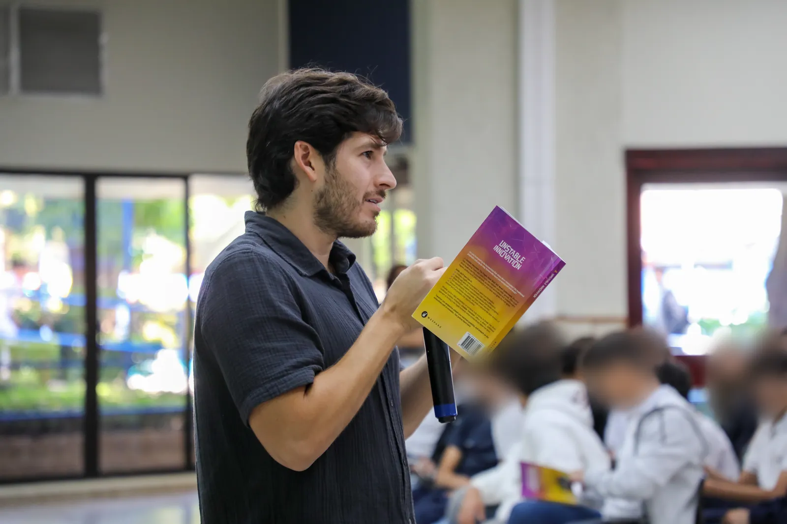

★★★★★
Léelo con tus seres queridos de todas las edades
Cuanto antes, mejor. Luego pasa a los libros que él recomienda. Lo recomiendo ALTAMENTE.
Si tu hijo o hija se aburre en el colegio, no sabe qué estudiar, siente la presión de un mundo que cambia demasiado rápido y aun así cree que puede hacer una diferencia, Innovación Inestable fue escrito para él o ella. Es un libro corto y fácil de leer, desde los 13 años, que les da a los jóvenes una visión positiva y una estructura simple para descubrir su siguiente paso.

Si dijiste que sí a tres o más, este libro es para él o ella.
Una visión positiva del futuro, un primer acercamiento a la filosofía e ideas que puede usar esa misma semana. No un sermón.
El caos y el cambio rápido son donde viven las oportunidades. Aprenden a ver la incertidumbre como un patio de juegos, no como una amenaza.
El libro muestra cómo nacen las ideas al mezclar cosas que no tienen nada que ver, y por qué dibujar una idea en papel puede cambiarlo todo.
Fallar es parte del camino, no una sentencia. El libro muestra cómo intentar, fallar, aprender y levantarse.
Nelson invita a “desintoxicar tu cerebro” y cortar el scroll infinito, porque nadie puede hacer cosas difíciles con una sobredosis de dopamina.
El estoicismo, Epicteto (“Solo los educados son libres”) y la eudaimonía, la idea griega de una buena vida, en palabras simples.
Construir cosas que aporten valor a los demás. Ser humilde. Hacer lo correcto, aunque cueste.
¿Quieres ejercicios para acompañar la lectura? La guía de aplicaciones prácticas gratis de este sitio tiene uno para cada capítulo.
Este libro no está escrito desde un pedestal. Nelson comparte las partes de crecer que la mayoría de adultos no cuenta:
Una persona con una idea fuerte: eso es todo lo que se necesita para encender la chispa.
Nelson Inno, Innovación Inestable
Hazte un favor y desintoxica tu cerebro.
Nelson Inno, Innovación Inestable
Sí. El lenguaje es limpio, sin malas palabras en la voz de Nelson y sin contenido gráfico. Los capítulos son cortos y el tono es cálido.
Prepárate para algunos temas más difíciles. El capítulo 5 trata de teoría de juegos e incentivos, y algunas páginas hablan de dinero y modelos de negocio. Un chico de 13 o 14 años puede pasar esas partes más rápido, y está bien. A los más grandes suelen parecerles lo más interesante.
Una nota para padres. Este libro puede darle a un joven dirección y una visión positiva. No reemplaza el apoyo profesional. Si tu hijo o hija está pasando por un momento muy difícil, por favor habla con un médico, un consejero o alguien de confianza para ambos.
Lean un capítulo y hagan la pregunta en la cena. Escucha más de lo que hablas.
Hola. Seguramente alguien que te quiere te mandó este enlace. Aviso: este no es un libro del colegio. Nadie te va a hacer examen.
Es un libro corto de alguien que también se aburría, que tampoco sabía qué hacer después y que también sentía que el mundo necesitaba arreglo. Lee un capítulo. Si no te dice nada, déjalo. Si te dice algo, vas a saber qué hacer después.
Cuanto antes, mejor. Luego pasa a los libros que él recomienda. Lo recomiendo ALTAMENTE.
No tienes que ser innovador para apreciar este libro. Ya sea que seas alguien con ideas, o simplemente conozcas y ames a uno, disfrutarás este vistazo a las mentes de las personas que hacen que las cosas pasen.
Este libro fue muy provocador e inspirador. Después de leerlo, me siento más motivado para crear valor en el mundo.
Funciona para un cumpleaños, el fin del año escolar, una graduación o el primer año de universidad.
En El Salvador, el libro impreso está en todas las tiendas de Librería Internacional, y también se consigue en Amazon. ¿Quieres leerlo antes de regalarlo? El PDF es gratis.
Sí, desde los 13 años. Es corto, fácil de leer y les da a los adolescentes una visión positiva del futuro, un primer acercamiento a la filosofía e ideas prácticas para descubrir su siguiente paso. Es ideal para adolescentes que lo cuestionan todo, se aburren en el colegio o no saben qué estudiar.
Desde los 13 años. Los más jóvenes se quedan con las historias y las grandes ideas. Los más grandes aprovechan al máximo los capítulos de mentalidad, conocimiento y habilidades, justo antes de elegir qué estudiar.
Sí. El lenguaje es limpio, sin malas palabras en la voz del autor y sin contenido gráfico. Algunos temas, como teoría de juegos y modelos de negocio, son más difíciles para lectores jóvenes, pero nada es inapropiado.
No, y es a propósito. No elige una carrera por ellos. Les ayuda a entenderse a sí mismos y al mundo, para que elijan con más confianza.
No. Se lee como una conversación, no como una clase. No hay exámenes, solo historias, ideas y preguntas que vale la pena pensar.
Sí. Unstable Innovation es la edición original en inglés, disponible impresa y como PDF, EPUB y Kindle gratis.
Un libro corto que ayuda a un joven a descubrir quién es, qué le importa y por dónde empezar.